Pruning Fruit Trees
January/February 1987
MOTHER'S HANDBOOK
This excerpt from Lewis Hill's
Pruning Simplified shows how to
improve your fruit trees.
Gardeners expect surprisingly modest yields from their orchards. I have a friend who always has a superb vegetable garden, a wonderful Led of roses, and the best strawberry patch in town. Each tomato is a jewel. Every stalk of corn produces two large ears, and every flower in his perennial bed looks as if it is posing for the cover of a garden magazine. Yet, in spite of his gardening skill, he seems to be perfectly satisfied to take whatever his fruit trees hand him.
Often this isn't very much. He has good fruit when conditions are perfect, but it's usually small, misshapen, poorly colored, and infested with insects. Furthermore, he typically gets a crop only every other year.
I'm sure that when his trees were young, they were full of vigor and produced excellent fruit. Young trees almost always bear large, colorful fruit because they still have very few limbs, so the fruit gets lots of sunlight. However, as the trees mature and grow more branches, you must prune to keep them producing well. Most trees naturally produce a large crop of fruit every other year, so if you want your trees to grow an annual crop, you must give them some special attention. Pruning is a neglected art, however, and one that novice fruit growers don't completely understand.
Pruning fruit trees doesn't need to be confusing. If you follow the simple, basic rules, you can leave the scientific jargon to those who are intrigued by it.
First of all, an orchardist must be aware that his tree consists of two parts-most fruit trees are grafted. The roots usually belong to a type of tree that produces low-quality fruit, whereas the top is a good-bearing variety that has been transplanted onto the rootstock. The two have been grafted together because this is the most efficient way to produce large numbers of quality fruit trees. Fruit trees grown from seed seldom resemble the parent tree even slightly, and growing trees from cuttings or layers is slow and extremely difficult.
Reasons for Pruning
Some gardeners enjoy pruning their fruit trees and consequently do a good job. However, no one should prune simply for the fun of it-you should know the reasons for pruning. All of the following are equally important to the health and maintenance of your trees:
Prune to get the tree off to a good start. Although it isn't easy, you should cut back any bare-rooted young tree at planting time. When we prune trees for customers at the nursery, they wince and say that it looks as if we are slaughtering the poor things, but we assure them that it is one of the best things you can do to insure good growth and early crops.
Trees enclosed in a ball of soil or growing in a pot will not need any cutback. However, bare-rooted trees have probably been dug recently, and chances are good that some of the roots have been seriously damaged in the process. Most mail-order plants are sold bare-rooted, and unless the directions you receive with the tree indicate that it has already been done, you should prune both the roots and top at planting time.
First, cut off any jagged edges on broken roots so they will heal smoothly. Then cut back the top to make it equal in size to the root surface. Cut back fruit trees that are whips-those with no side branches-by at least a third: If a tree is six feet tall, for example, cut it back at least two feet, and make the cut on a slant just above a bud.
If your fruit tree has branches, cut of those that are weak, dead-looking, broken, or too close to the ground. Then cut back the top by a third and each strong, healthy limb by at least a third also. Cut each limb back to an outside bud so that the next branch will form toward the outside and the tree will spread outward rather than inward toward the trunk. (See the sidebar "Training Young Apple and Pear Trees.")
Keep in mind that these directions are only for pruning new trees. Don't neglect the other ingredients for proper planting, like soaking bare-rooted trees for several hours after arrival, using lots of good soil and water while planting, and planting to the right depth. Most fruit tree failures are due to the lack of proper planting as well as the failure to prune the tree properly at planting time.
Prune lightly to shape the tree during the first years of its life. The old saying "as the twig is bent, so the tree is inclined" is unquestionably true. A little snipping and pinching here and there while the tree is young will save you a lot of heavy pruning later on.
If you have trained your tree properly early in its life, all subsequent pruning will come easier. Whenever you clip or snip off the buds or tiny twigs, try to keep in mind an image of the mature tree. Prune in accordance with the tree's natural growth habit and for the purpose of' developing a strong tree with a branch structure sturdy enough to hold up the crop. Keep the branches sparse enough to allow the sunshine in to ripen the fruit.
You should prune very little during the tree's first yearsjust enough to help shape the tree. Although it's good to prune heavily at planting time, this process may cause it to grow too many branches close to the ground. By pinching or clipping off all those undesirable new sprouts during the first years, you will be training the new tree to grow upright. You'll also avoid the heavier pruning which would delay the tree's first crop.
Some trees need more shaping than others. Many varieties of apples, such as Wealthy and McIntosh, seem to grow into a good shape quite naturally. Other varieties, like the Delicious and Yellow Transparent, tend to grow very upright, forming lots of tops with bad crotches. If left uncorrected, these weak crotches and the limbs coming from them are very likely to break under a heavy load of fruit.
Pruning tools shouldbe sterilized to prevent the spread of disease.
Fruit-loads on plums and cherries are not as heavy as those on pears and apples. Since they are apt to grow into a bushy shape no matter what you do, early shaping is important mainly to keep them from getting too wide or to prevent the branches from growing too close to the ground.
Some trees grow twiggy naturally, and certain apple varieties, such as Jonathan, as well as many varieties of cherries, plums, peaches, and apricots, need additional thinning of their bearing wood to let in sunshine to ripen the fruit.
Direct all of your early pruning to guiding the tree into the desired shape. Fruit trees are usually trained in one of three forms: central leader, modified leader, or open center.
Central leader. Trees that bear heavy crops of large fruit, including apples and pears, are usually best pruned to grow with a central leader, or trunk, at least in their younger days. With only one strong trunk in the center of the tree, branches come strongly out from it at fairly wide angles and can safely bear abundant loads of fruit.
Thin out the branches growing from the central leader as necessary to allow open space between the limbs. Thin also the branches that come from these limbs, and so on to the outermost branches. Sunlight produces colorful, flavorful, vitamin-enriched fruit. Sunlight and circulating air also help to prevent scab, mildew, and a host of other diseases that thrive in shade and high humidity.
Eventually you will have to remove the top of the central leader because this high-growing leader will gradually sag under a load of heavy fruit, forming a canopy over part of the tree that will shut out the light. Cutting back the top helps prevent a canopy from developing while also keeping the tree from growing too tall.
Modified leader. The modified leader method is initially the same as the central leader method, but eventually you let the central trunk branch off to form several tops (Fig. 3). This training insures that the loads of fruit at the top of the tree are never as heavy as those at the bottom, where limbs are larger. Cut back the tops of larger trees from time to time to shorten the tree or to let in more light. Although the central leader method is preferred by most orchardists for growing apples and pears, the modified leader method is easier to maintain simply because most fruit trees grow that way naturally.
Open center. The open center method, also known as the open top or vase method, is an excellent way to let more light into the shady interior of a tree (Fig. 4). Since this method produces a tree with a weaker branch structure than if it had a strong central leader, the lightweight fruits are the best subjects: quinces, crab apples, plums, cherries, peaches, nectarines, and apricots.
Prune so that the limbs forming the vase effect do not all come out of the main trunk close to each other, or they will form a cluster of weak crotches. Even with the whole center of the tree open, you'll have to thin the branches and remove the older limbs eventually, just as you would with a tree pruned in the central leader method.
Prune for good crops of quality fruit. Good fruit needs plenty of sunshine, and a fruit tree fortunately has a potentially large area to produce fruit: a full-size, standard tree can be well over 30 feet wide and 20 feet high. However, only 30% of an unpruned tree, because of its tight branch structure, gets enough light, while another 40% gets only a fair amount of light. As these percentages indicate, when only the top exterior of the tree produces good fruit, you are getting the use of but a third of your tree, and all that fruit is grown where it is most difficult to pick. Even the most careful pruning won't bring the light efficiency to a full 100%, but you can greatly increase it.
The drawings in Figs. 5 and 6 illustrate the theory of pruning to let the light in. Since a fruit tree is three-dimensional, your tree won't look just like the drawings. They are exaggerated to show why pruning should be done and how it lets more light into the tree.
Another way to improve the quality of your fruit is to remove the surplus fruit whenever your tree sets too many (Fig. 7). Although regular pruning will cut down the number of fruits produced, a tree may still bear a greater number than it can develop to a large size. The production of too many seeds seems to tax a tree's strength, and certain varieties of fruits seem bent on bearing themselves to death, unless you give them a helping hand. When a tree bears too many fruits in any one year, it usually bears few, if any, fruits the following year. Thin out extras when they are small. Most trees, as well as their fruits, benefit if you leave only one fruit remaining in each cluster. Make sure that each fruit is at least six inches from its neighbor on either side.
By replacing and renewing the old bearing wood,you encouragethe tree to bear well.
Prune to keep your trees from getting too large.
Since standard-size fruit trees can grow to 25 feet or more, they are often pruned to keep them at a more manageable height. A tall tree is difficult and dangerous to work in. And, because so much of the tree is shaded, it often produces poor fruit.
Of course it's best to prune regularly so that your tree won't get too tall in the first place, but if this advice comes too late, consider shortening it. The tree should be healthy enough to stand major surgery. Make sure that there will be enough lower branches left on the tree to sustain it after its upper level has been removed: The leaf surface remaining must be adequate to supply nutrients to the tree. If these conditions can be met, begin to prune back the top in late summer or early fall. Make the cuts in small stages, cutting off only small pieces of limbs at one time, so that the limb weight will be lessened before you begin the heavy cutting. These small cuts lessen the danger of splitting limbs, and also help insure that you won't drop heavy pieces of wood onto the lower branches. If possible, have a helper handy to catch the limbs as they fall or to guide them away from the tree (Fig. 8).
Don't cut off more than one large limb in any one year. Make sure that some regrowth has started on the lower branches before you make any further cuts. Like an obese person, the tree got into its overgrown condition over a period of many years, so don't try to correct all its problems at once.
Prune to keep your tree healthy. Even young fruit trees occasionally need to be pruned because of some mishap: Limbs get broken, tent caterpillars build nests, and as the tree gets older, rot and winter injury often take their toll on the branches.
As soon as you notice any damage, clip or saw off the injured part back to a live limb or to the trunk. Even one deteriorating limb is not good for the tree's health, and the accumulation of several sick limbs will speed up the decline of the tree.
Rejuvenation is vital to a tree's health, especially when your goal is to produce good crops of high-quality fruit over a number of years. Many trees that produce handsome specimens while they are young or middleaged often bear only small, poor fruit as they grow older. By replacing and renewing the old bearing wood, you encourage the tree to continue bringing forth large red apples or big crops of juicy plums or peaches.
As with every other kind of pruning, you'll get the best results from rejuvenation pruning when you do it on an annual basis rather than as an occasional event. If you remove a few of the older limbs each year to open up the tree to sunlight and air, the whole bearing surface can be renewed every six or eight years, which is like getting a whole new tree. In addition, because you will seldom need to do any drastic pruning of large, heavy limbs, the tree will suffer less.
Large limbs should grow only as an extension of the tree trunk itself, and as a unit from which the small limbs grow. These overlarge limbs are a tremendous strain on the tree, so the fewer, the better. Because fruit trees are pruned more heavily than most other plant life, heavy limb growth is much more likely to result than when a tree is left unpruned or lightly pruned. Cut off crossed branches or branches that might rub to cause wounds in the bark (Fig. 9).
Water sprouts are those upright branches that grow in clumps, often from a large pruning wound (Fig. 10). They are usually unproductive, and they can weaken the tree by causing additional, unwanted shade. You should remove water sprouts promptly.
Suckers are the branches that grow on the lower part of the tree trunk or from the roots of the tree (Fig. 10). Usually they grow from below the graft, so if you don't remove them, they'll grow into a wild tree or bush that will crowd out the good part of the tree within a few years. A lot of sucker growth results on fruit trees when a slower-growing variety is grafted onto a vigorous-growing rootstock. Usually the suckers appear as a cluster of branches close to the base of the tree trunk, but sometimes (especially on plum trees) they may pop up out of the roots anywhere under the tree, even a distance away from the trunk. Mow or clip them off at ground level as soon as they appear.
When to Prune
There is an ever-continuing argument among pomologists about the best time to prune fruit trees. Magazines often run articles supporting one time of year or another, and each professional orchardist and experienced home grower has a favorite time. Meanwhile, beginners can get completely confused listening to the controversy.
Perhaps the best way to help answer the question is to describe what happens when you prune at different seasons. Seasonal conditions vary greatly throughout the country, so your location is an important factor in determining when you should prune.
Spring. Most people agree that pruning a fruit tree when it is just beginning to make its most active growth is one of the worst times. The tree will probably bleed heavily, and it may have trouble recovering from the loss of so much sap. Also, infections such as fire blight are most active and easily spread around in the spring. If a book suggests pruning in the early spring, the author often means late winter-before any growth begins.
The only pruning you should do in the spring is to remove any branches that have been broken by winter storms or injured by the cold. Immediately tack bark that has split from the trunk back onto the wood, and seal the wound with tree dressing to prevent air from drying the bare wood.
Early summer. Although I don't recommend major pruning in early summer, this is a good time to pinch off buds and snip off small branches that are growing in the wrong direction or in the wrong place. Remove suckers, water sprouts, and branches that have formed too low on the stem as soon as you notice them.
Late summer. Late summer is a favorite time for many people to prune their fruit trees. By pruning after the tree has completed its yearly growth and hardened its wood and before it has lost its leaves, you stimulate less regrowth. You still have to take care of any frost injury in late winter, but this late summer-early fall pruning works well if extensive winter damage is not likely.
Wherever growing seasons are short and the extreme cold or heavy snow and ice loads may cause injury to the trees, late-winter pruning is best. Don't cut back the tree in late summer if there's a good chance that the remaining branches will be winter-killed. You'll have to prune away too much of the tree.
Late fall and winter. Late fall or winter is a favorite time to prune in the warmer parts of the country. Orchardists have more spare time then, and the trees are bare, so it is easier to see what needs to be done. You should choose days when the temperature is above freezing, however, to avoid injury to the wood. Because frozen wood is very brittle, it breaks easily when hit.
However, if you live in a cold part of the country, or if you are growing tree varieties that are inclined to have winter injury, wait until the coldest weather is over before pruning.
Late winter. This season is probably the most popular time for northern gardeners to prune. As in late fall and winter, the tree is completely dormant, and since the leaves are off, it is easy to see where to make the cuts. You can repair any winter injury, the weather is usually warm enough during the day, and most orchardists are not too busy during this season.
If you prune your trees regularly each year, late winter is a satisfactory time to prune because you don't have to remove large amounts of wood. However, if the trees have been neglected for a few years and are badly in need of a cutback, late winter is not the best time to prune. Excessive pruning in late winter usually stimulates a great deal of growth the following spring and summer, because the tree tries to replace its lost wood. Branches, suckers, and water sprouts are likely to grow in great abundance. If a major pruning job is necessary, do all or at least a large part of it in late summer or early fall so that you won't cause a great amount of regrowth.
EDITOR'S NOTE: Pruning Simplified is available for $12.95 plus $2 shipping and handling from Garden Way Publishing, Storey Communications, Schoolhouse Rd., Pownal, VT 05261.
PRUNING SANITATION
Some of the most serious diseases are carried by pruning tools. Fire blight, for example, a bacteria-caused disease that is lethal to fruit trees, has spread around many orchards this way.
Training Young apple and pear trees
If you suspect disease, think of yourself as a tree doctor as you prune. You wouldn't expect a surgeon to take out your gallbladder with the same dirty instruments he had used to remove his last patient's appendix. Your prized Bartlett pear deserves careful treatment, with tools that have been disinfected.
If you feel that there might be disease in your orchard, disinfect your gloves and tools after pruning each tree. Professional orchardists often use a mixture of bichloride of mercury and cyanide of mercury for this purpose, but both of these chemicals are very poisonous and are not recommended for home use. For the home orchardist, it is safer and quite effective to soak the tools in a pail containing fullstrength Clorox or similar home bleach as you go between branches or trees. With these germ-free tools, you can approach your patients with a clear conscience and not feel they are drawing their limbs about them in fear and trembling.
Disease also spreads around the orchard via the wind and insects. A good way to keep fungus, germs, and insects out of a tree is to seal up all cuts and open wounds with an antiseptic paint. Most tree infections are especially active in the spring, so do your painting and sealing early in the season before they get started. Remove all of the pruning debris from the area, and either burn it or take it to a dump or landfill.
|
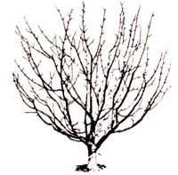 BEFORE PRUNING |
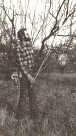 BEFORE PRUNING |
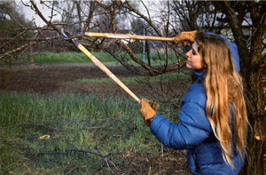 BEFORE PRUNING |
|
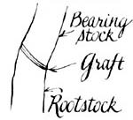 AFTER PRUNING |
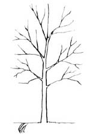 AFTER PRUNING |
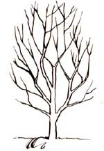 AFTER PRUNING |
|
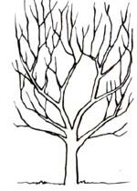 |
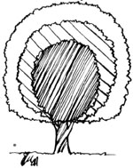 |
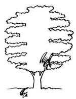 |
|
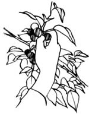 |
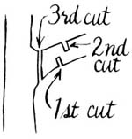 |
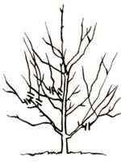 |
|
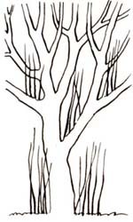 |
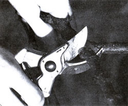 |
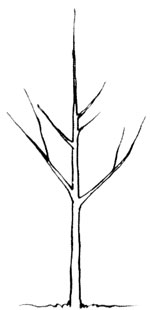 |
|
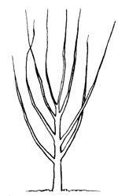 |
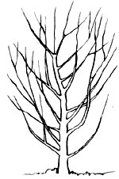 |
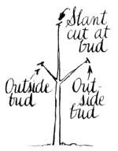 |
|
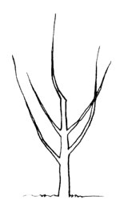 |
 |
|